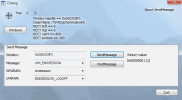
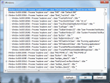

SendMessage
$ADSENSE_TOP$SendMessage is a little tool to send Windows messages to any window.
Ever wondered how you should test whether your application correctly responds to certain system messages like WM_ENDSESSION or WM_POWERBROADCAST? Of course you can test your application by actually triggering those messages, but especially the WM_ENDSESSION message and its purpose makes it impossible to attach a debugger to your app once Windows sends you that message.
With this tool, you can send that message and any other message you like to your application window. And you can do that while you have a debugger attached to your application!
.{kind=link}
To find the window handle of your app, either drag the target icon in the upper left to your main window, or click on the "Windows" button and select the window from the list.
.{kind=link}
There are a few window messages predefined in SendMessage. If you need to send a message that is not in the list, just enter the number of the message and any required values for WPARAM and LPARAM manually. The screenshot below shows how this would look like for the WM_SYSCOLORCHANGE message.
.{kind=link}
Once you've entered the message information, click on either the "SendMessage" or "PostMessage" button and the message is sent or posted to your window.
If you find any bugs or have suggestions for new features, please enter them in the issue tracker.
To download the tool, go to the download page.